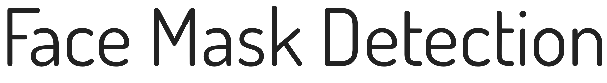
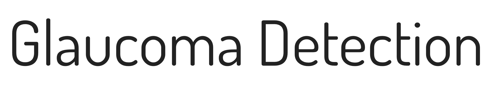
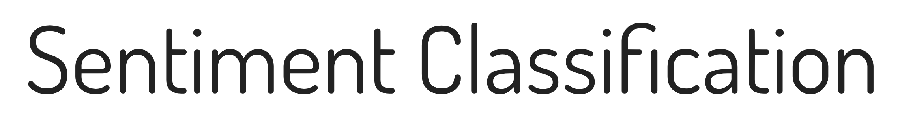
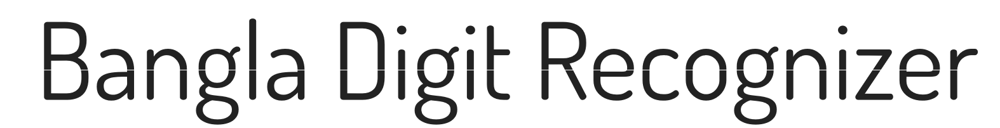
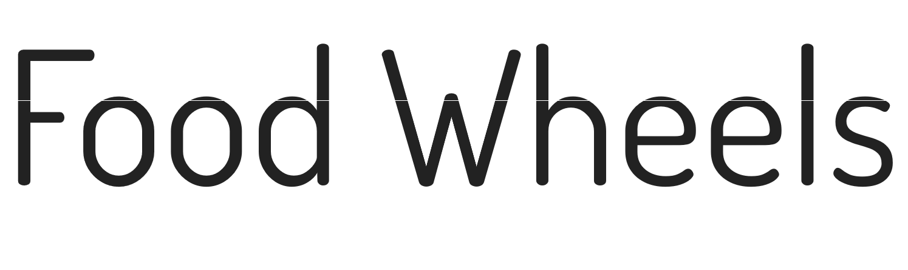
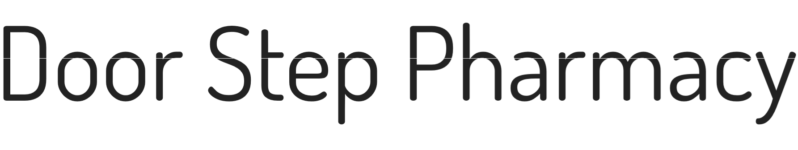
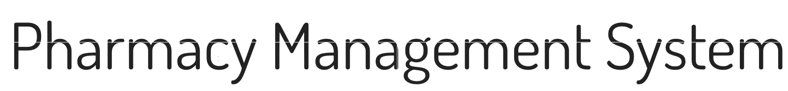
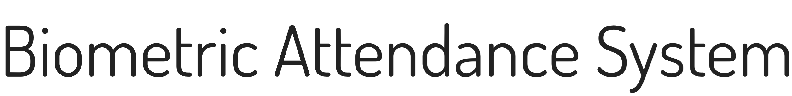
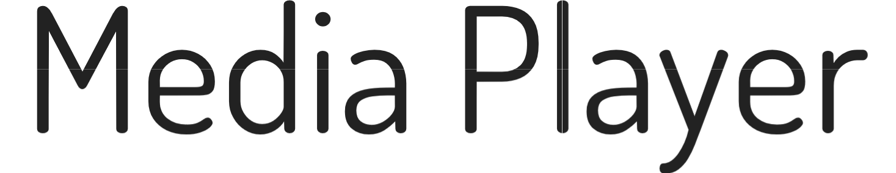
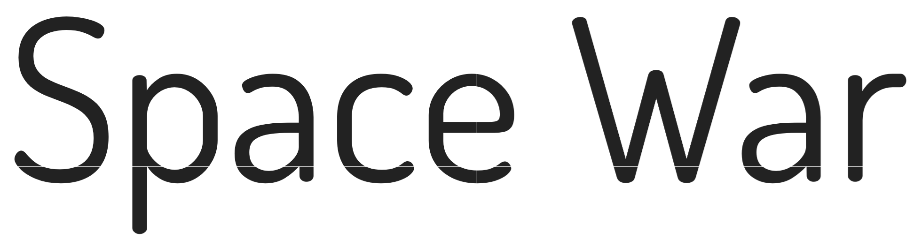

Projects
Academic Projects
2021Face Mask Detection using CNN and Transfer Learning

Face Mask Detection using two Deep Learning (Convolutional Neural Networkl) and one Transfer Learning Model (MobileNetV2).
2021Glaucoma Detection using
Glaucoma Detection using Convolutional Neural Network

Glaucoma Detection using Convolutional Neural Network, where two types of Pooling Layer has been used: I: MaxPooling, II: Average Pooling.
2021Sentiment Classification from Tweeter Data using Bi-directional LSTM

This is a NLP based project that applies to classify sentiment of a person using the Tweeter based data.
2021NLP based Bangla Digit Recognizer using Deep Convolutional Neural Network

This is a NLP based project for Bangla Digit Recognizer with the implementation of Deep Neural Network.
2020Food Wheels

This is a restaurant website from where one can order online foods as well as can review them if he has accounts, one can apply for a chef's job if there is any vacancy. To built this application HTML, CSS, PHP and database are used.
2021Door Step Pharmacy

Door_Step_Pharmacy a "Distributed Database Management System" project based in "PL/SQL" Language. And Run in "CLI". Features and Other Details are given in the "README" section of GitHub.
2019Pharmacy Management System

This is a pharmacy management system desktop application that is useful for the modern pharmacy management system. This app is integrated with java swing, as database Microsoft SQL server is being used.
2021Biometric Attendance System

An automated Attendance System is a commonly used system to mark the presence in offices and schools. This project has a wide application in schools, colleges, business organizations, offices where marking of attendance is required accurately with time. By using the password input, the system will become more secure for the users.
2020Online Disease Checker and Medical Support (ODCMS)
An ASP.NET project. This website, patients can do a live chat with active doctors about medical problems. Also, patients can see a list of doctors and hospitals with details.
2020LearnC
An Android application where a newbie can learn C programming with an online tutorial, offline tutorial, practicing with some competitive programming question and viva board questions, can run his/her code online. To give the quiz, the user must be logged in into the system.
2019Media Player

Our main motto for this project was to use the JavaFX and graphical user interface of Java. We also used the media graphic framework from the ORACLE. It is more powerful to use the libraries from the oracle. Oracle’s library is used to play both mp3 and mp4 formats music. We used the latest version of JavaFX which is Javafx 9 and the latest version.
Space War

SpaceWar is an arcade game developed on 'Microsoft Visual Studio 2010 Shell' mainly based on C programming language/a structured programming language with special emphasis on higher features like strings, files, sound, and graphics. In this arcade game one player needs to kill enemy aircraft and increase the level. At a higher level, the movement of the enemy aircraft will be faster. In the last stage, the boss will arrive. The high score will be updated after making a better score than the previous one. Gaming control and other necessary instructions are given in the game's instruction section.